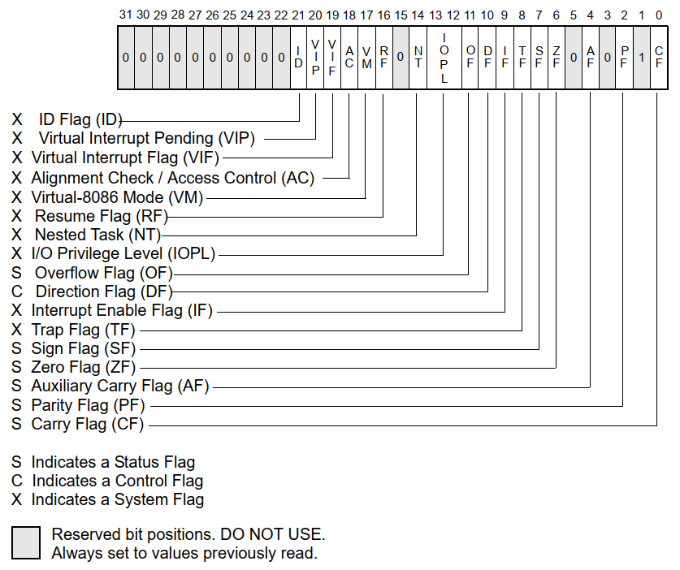

in x64, the eflags register is extended to 64 bit rflags, though the upper 32 bits of the register are reserved and not in use.
- When suspending a task, the processor automatically saves the state of the EFLAGS register in the task state segment (TSS).
- When a call is made to an interrupt or exception handler procedure, the processor automatically saves the state of the EFLAGS registers on the procedure stack. When an interrupt or exception is handled with a task switch, the state of the EFLAGS register is saved in the TSS.
mainly there are 3 types of flags, Status flags, Control flags and System flags.
ZF - Zero Flag (6) - flag is set to 1 (true) if the result of an arithmetic operation equals to zero, set to 0 otherwise.
SF - Sign Flag (7) - set to 1 (true), if themost significant bit of a result of is 1 (negative)
| Overflow | OV |
| Direction | UP |
| Interrupt | EI |
| Sign | PL |
| Zero | ZR |
| Auxiliary | AC |
| Parity | PE |
| Carry | CY |
